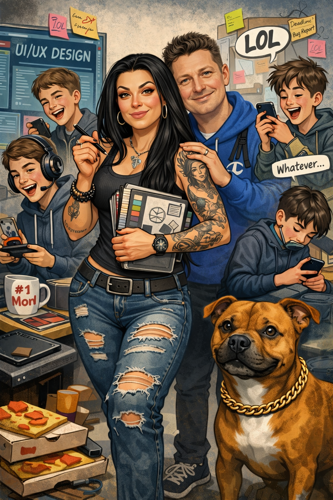

Olen 40-vuotias, avioliitossa elävä uusperheen äiti Kirkkonummelta,
kotoisin Hämeenlinnasta. Perheeseeni kuuluu aviomieheni, joka
työskentelee IT-alalla, ja meillä on yhteensä 4 teini-ikäistä poikaa.
Perheen miehet harrastavat kaikkea mahdollista jääkiekosta kalastukseen
ja laskettelusta mopoihin. Itse harrastan kuntosalilla käyntiä (jotta
pysyn kunnossa) ja maalaamista musiikkia kuunnellen (jotta pää pysyy
kunnossa).
Olen intohimoinen kodin sisustaja ja remontoija. Teen kaikenlaisia
remontteja ja pihasuunnitelmia. Nikkaroin ja verhoilen, tuunaan ja
uudistan. Kotini on linnani ja pidän siitä hyvää huolta.
Perheeseemme kuuluu myöskin staffi nimeltä Ozzy. Vauhdikas ja lempeä
koira, joka on iso osa perheemme arkea. Kaikki rakastavat possua.
Luonteeltani olen sosiaalinen, avoin, huumorintajuinen ja
oikeudentuntoinen. Kannan vastuuta monista asioista elämän eri
osa-alueilla ja koen olevani luotettava. Olen lempeä ja kiltti, mutta
tarvittaessa tiukempaakin asennetta löytyy. En lannistu tai luovuta
haasteita kohdatessani, vaan selätän ne yksi kerrallaan. Autan
mielelläni muita ja nautin uusien asioiden oppimisesta. Rentoutuminen on
ihanaa ja siitä minun täytyy välillä itseäni muistutella, jottei elämä
menisi ihan suorittamiseksi.
Pidän matkustelusta ja puhun viittä eri kieltä. Haluan menestyä työssäni
ja olla arvokas osa työyhteisöä. Olen rohkeä jännittäjä ja ylitän itseni
ja pelkoni melko usein. Esimiestehtävissä olen ollut hyvin pidetty ja
saanut kiitosta ihmisten kohtaamisesta, tiimityöskentelystä ja
ongelmanratkaisusta. Olen ahkera ja valmis tekemään töitä
saavuttaakseni tavoitteeni. Olen myös hyvin organisoitunut ja pystyn
hallitsemaan useita tehtäviä samanaikaisesti. Työskentelen mielelläni
tiimissä, mutta osaan myös ottaa vastuuta ja tehdä päätöksiä
itsenäisesti. Pystyn työskentelemään paineen alla ja kovassakin kiireessä. Uskon, että vahvuuteni ovat ihmisten kanssa
työskentelyssä, ongelmanratkaisussa ja kyvyssä sopeutua erilaisiin
tilanteisiin. Olen motivoitunut oppimaan uutta ja kehittymään
ammatillisesti, ja uskon, että minulla on paljon annettavaa
työyhteisölle.